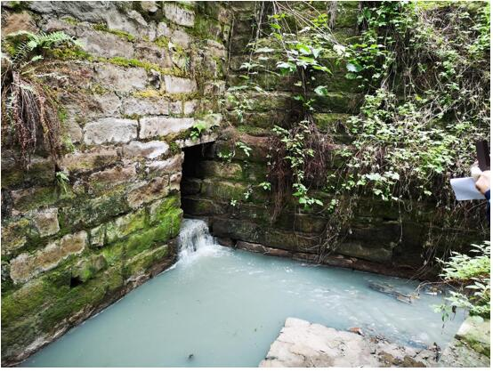
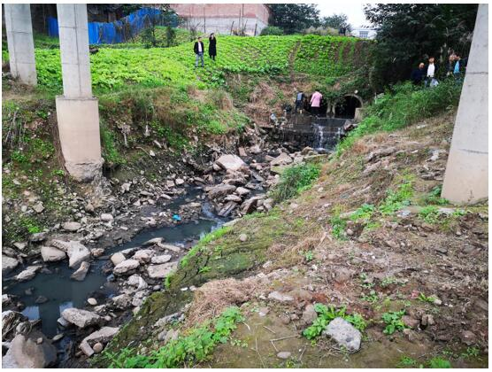
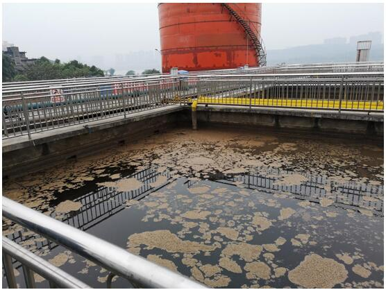

四川省泸州市大量污水直排长江
2018年11月8日至14日，中央第五生态环境保护督察组对四川省泸州市开展现场检查，发现该市督察整改工作不力，环境基础设施建设滞后，重点企业违法排污问题突出,大量污水直排长江。
一、基本情况
泸州市位于长江上游，是长江与其一级支流沱江的交汇处。2017年第一轮中央环境保护督察反馈指出：沱江流域部分地区重点工作推进不力，水环境质量下降明显，部分应提标改造的污水处理厂未按期完成，乡镇污水处理厂建设滞后。
四川省整改方案明确：要以实施岷江、沱江等流域水污染防治规划为重点，加快推进城镇生活污水处理设施建设。泸州市整改方案也明确：要建立健全污水处理行业监管机制，强化运行管理，确保污水处理设施正常运行。
二、存在问题
（一）城镇生活污水处理设施建设滞后。泸州市江阳、龙马潭、纳溪3个片区紧邻长江及沱江，常住人口约152万人，因城市污水处理能力不足，超过60万人的生活污水只能通过乡镇和农村污水处理设施收集处置。但目前乡镇和农村污水处理能力严重不足，仅约1.6万吨/日，导致该区域大部分生活污水直排环境。检查还发现，泸州市城东、城南污水处理厂设计处理能力均为5万吨/日，但进水化学需氧量浓度长期低于100毫克/升，生活污水有效收集率不足50%，服务区域内大部分截污支管缺失，部分街道和乡镇雨污合流、混流问题严重，已建成的污水管网混接、错接、破损、堵塞等问题十分突出。

图1 生活污水经市政排污渠直排长江
因支管入口过滤隔栅长期被杂物堵塞，导致龙马潭区老鹰坵市政排污渠每天有近千吨污水直排长江，污水化学需氧量、氨氮、总磷浓度分别高达470毫克/升、21毫克/升、4.78毫克/升，均超过地表水Ⅴ类标准10倍以上。
图2 截污干管管理不善导致大量污水溢流长江
（二）部分重点企业违法排污问题严重。现场检查发现，泸州老窖股份有限公司是泸州市大型国有控股上市公司，其罗汉酿酒基地污水处理站实际进水化学需氧量浓度长期高于设计处理浓度，导致生化池漂浮大量死泥，加之加药系统老旧，药剂混合不均匀，污水处理设施长期不正常运行。
图3 泸州老窖污水处理站生化池漂满死泥
且因管网破损，部分污水直接渗漏外排至市政排污渠，渗排污水化学需氧量、总磷、悬浮物浓度分别高达345毫克/升、27.5毫克/升、80毫克/升，均超过行业直接排放标准限值，化学需氧量和总磷浓度分别超标2.45倍、26.5倍。按照环评批复要求，罗汉酿酒基地污水处理后产生的污泥应送锅炉焚烧处置，但企业从未按此执行，而是将其混入生活垃圾后由市环卫所送生活垃圾填埋场填埋，且没有处置协议和转运联单。2018年1月，企业通过立春机械设备公司与龙马潭利民环卫服务部签订污泥外运填埋合同，但未对处置情况进行跟踪，后者实际将污泥直接倾倒至苗圃基地，带来环境污染隐患。
此外，与罗汉酿酒基地一墙之隔的泸州国粹酒厂将生产废水直排厂区雨水管网，最终经市政排污渠排入长江，污水化学需氧量浓度高达1700毫克/升。
三、原因分析
泸州市政府及相关部门对督察整改工作重视不够，落实不力；对环境基础设施建设投入不够，推动不力，全市大量生活污水长期直排长江及沱江；对重点工业企业环境监管不到位，导致违法排污问题长期存在。
本文信息来源国家生态环境部
相关主题：
原文编辑: EHS资讯
原文链接: https://ehsinfo.cn/2019/08/13/泸州污水直排长江.html
版权声明: 转载请注明出处(必须保留作者署名及链接)